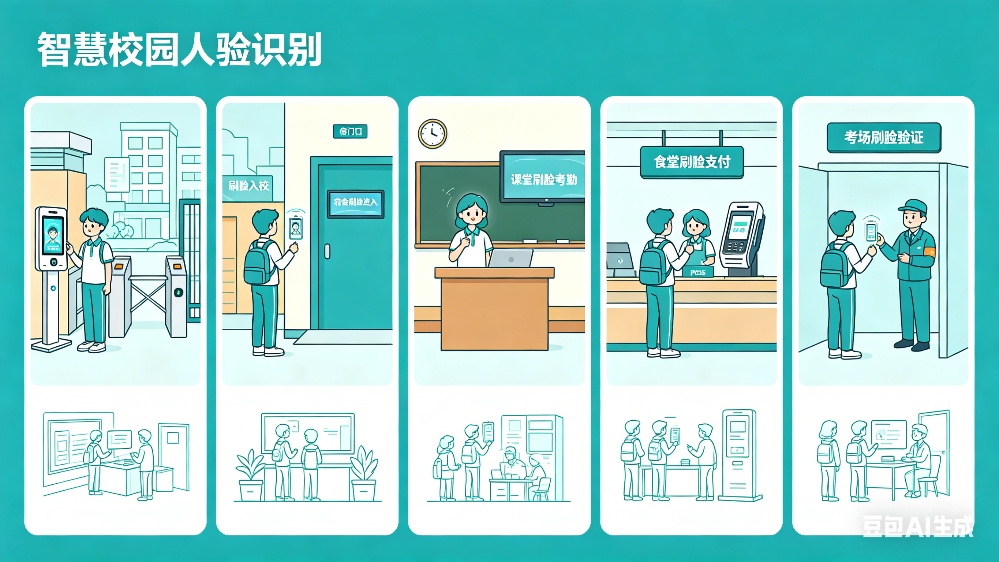
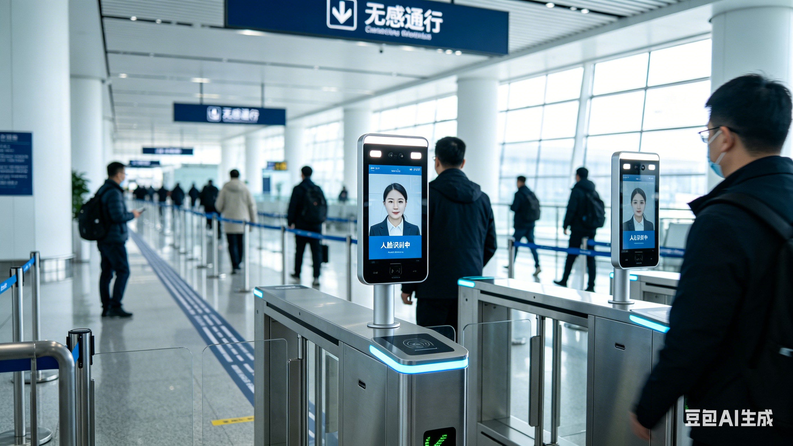

一、智慧校园场景

人脸识别在校园中已经全面普及，成为保障安全、提升效率的重要工具，也是高中生最常接触的场景。
- 校园门禁：刷脸入校，杜绝外来人员随意进入，保障校园安全；
- 宿舍管理：刷脸进入宿舍，防止外来人员留宿，保护学生财物安全；
- 智慧考勤：课堂、网课、考试刷脸签到，杜绝代签、替考行为；
- 食堂消费：刷脸支付，无需携带校园卡，快速完成就餐支付；
- 考场验证：中考、高考等重要考试刷脸核验身份，保证考试公平。
二、公共交通与出行

在火车站、机场、地铁等交通枢纽，人脸识别大幅提升通行效率，实现“无感通行”。
- 机场安检：刷脸核验身份，快速通过安检，无需反复出示身份证；
- 火车站验票：刷脸进站，告别排队取票、人工检票的繁琐流程；
- 地铁乘车：部分城市支持刷脸过闸机，手机没电也能正常乘车；
- 长途客运：客运站刷脸检票，防止票证冒用，保障出行秩序。
三、智能家居与电子设备

人脸识别是智能设备的标配功能，用于隐私保护与快捷操作，贴近日常生活。
- 手机解锁：手机、平板刷脸解锁，比密码、指纹更快捷；
- 电脑登录：笔记本刷脸进入系统，防止他人随意使用；
- 智能家居：智能门锁刷脸开门，回家无需带钥匙；
- 隐私保护：只有机主本人刷脸才能查看私密照片、文件。
四、公共安全与社会服务

人脸识别在安防、寻人、政务服务中发挥重要作用，维护社会秩序与公共安全。
- 安防监控：小区、商圈、街道监控自动识别人脸，预警异常行为；
- 寻人救助：帮助寻找走失老人、儿童，快速锁定位置；
- 政务办理：政务大厅刷脸办理业务，无需携带各类证件；
- 网吧、酒店：实名刷脸登记，规范经营管理，落实安全要求。
五、商业消费与金融服务

在购物、金融领域，人脸识别让支付更快捷、账户更安全。
- 刷脸支付：超市、便利店、餐饮店刷脸付款，无需手机；
- 银行核验：银行刷脸办理开户、转账，保障资金安全；
- 会员识别：商场刷脸识别会员，自动推送优惠与服务；
- 自助设备：ATM机刷脸取款，忘记银行卡也能操作。